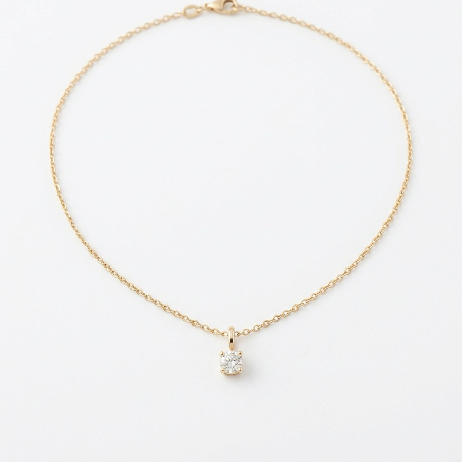
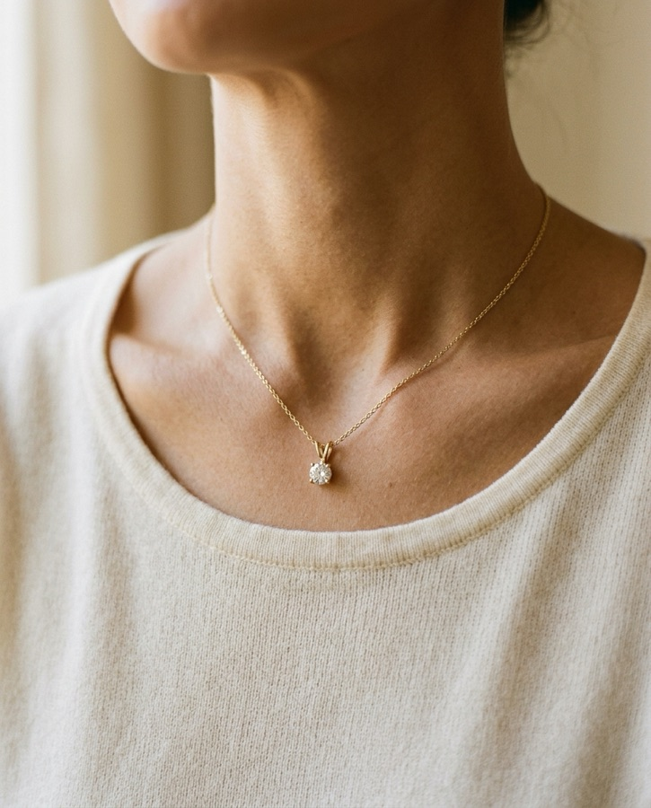
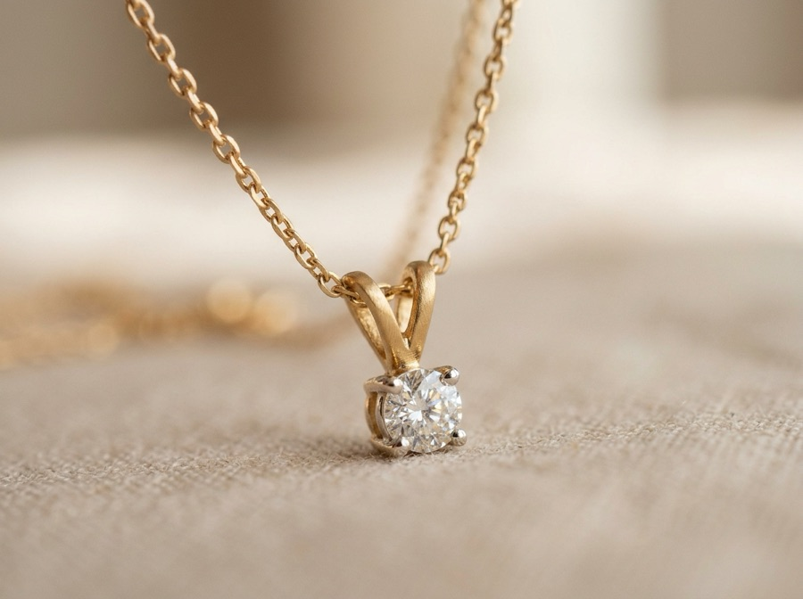
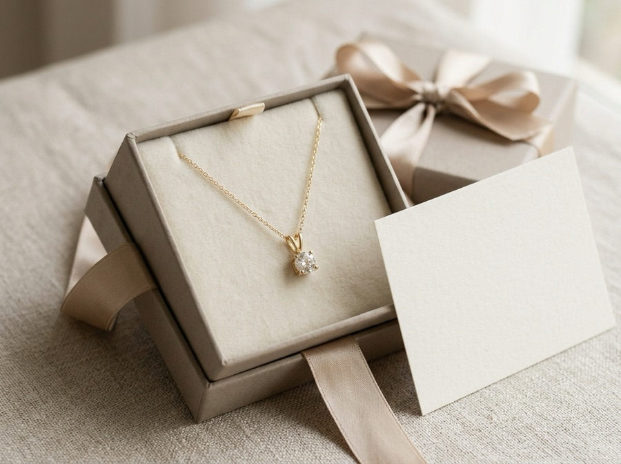

K10 一粒ダイヤ ネックレス
32,800円
K10イエローゴールドに天然ダイヤモンドをあしらったネックレスです。
素材: K10, ダイヤモンド
レビュー件数: 0件
問題点：サイズ感・質感・素材の詳細・ギフト対応・返品や保証が、このページだけでは分からない
着用・白背景・拡大をタップで切り替え。送料・ギフト対応・アジャスターを価格の近くに。
理由画面では手に取れない商品なので、見る角度を増やし、迷いやすい点を最初の1画面で答えるため。


Firuneau
K10 一粒ダイヤ ネックレス
¥32,800 税込
素材・着け心地・ギフトをアイコンつきの3項目に整理。
理由スマホでは読み飛ばされやすいため、流し読みでも「どんな商品か」が分かる形にする。
FEATURES
3つのこだわり
K10イエローゴールド
ゴールドを約42％含む素材。
軽やかな着け心地
日常使いしやすい、控えめな大きさ。
ギフトにも
特別な日の贈り物に。
40cm／45cmを首元の図2枚で比較。ペンダントは1円玉との比率で表示。
理由数字だけでは大きさを想像しにくい。「思っていたより小さい／大きい」を減らすことを狙う。
SIZE GUIDE
長さと大きさ
チェーンは40cm＋5cmのアジャスター。40cmと45cmの2通りに長さを調整できます。
※ 着用位置は首まわりや体型によって変わります。図はイメージです。
ペンダントトップの大きさ
硬貨と比べた比率の目安です。
地金の仕上げと石の表情が見える拡大写真を配置。
理由高価格帯の商品は、写真と実物の印象差が不安のもとになりやすいため。
TEXTURE
ディテール
肌になじみやすい、やわらかな金の色味。
地金・石・刻印・ニッケルの使用有無を表にし、アレルギーは「医師への相談」を案内。
理由「起きない」と断定せず、正確に書くことで安心して検討してもらうことを狙う。
MATERIAL & CARE
素材について
- 地金
- K10イエローゴールド
- 石
- 天然ダイヤモンド（約0.1ct）
- 刻印
- 留め具にK10の刻印あり
- ニッケルの使用有無
- 商品ごとに明記
金属アレルギーについて
体質によっては、金属に反応が出る場合があります。金属アレルギーのある方・ご心配な方は、ご購入前に医師にご相談いただくことをおすすめします。
箱の写真と、“for you” のメッセージカードのイメージを表示。
理由贈り物として買う人は「そのまま渡せるか」を確かめたい。渡す場面を想像しやすくする狙い。
GIFT
大切な人への贈り物に

専用のギフトボックスに入れてお届けします。メッセージカードもお選びいただけます。
for you
いつもありがとう。
メッセージの文面は、カート画面でご入力いただけます（イメージ）
保証期間・返品の条件・お手入れ方法を3項目で明記。
理由高価格帯ほど「失敗したらどうなるか」が購入前の壁になる。そこを先に答えておくことを狙う。
AFTER CARE
保証・返品・お手入れ
-
修理保証（1年）
お買い上げから1年間、通常のご使用で生じた不具合は無償で修理します（紛失・お客さまの過失による破損は対象外です）。
-
返品・交換対応
イメージと異なった場合、未使用に限り到着後7日以内であれば返品を承ります（返送料はお客様負担）。
-
お手入れ方法
着用後は柔らかい布で優しく拭き、付属のポーチに入れて保管してください。
※保証・返品の条件は本サンプル用の例です。
平均点と、使うシーンが分かる一言（架空の例）。
理由自分に近い人の感想が、判断の助けになりやすいため。
REVIEWS
お客さまの声
「さりげない大きさで、仕事中もつけやすいです。アジャスターで服に合わせて長さを変えられるのも嬉しいポイントです。」
※架空のレビュー例です